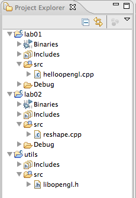
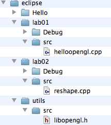

Configure Eclipse for successive Labs
Register a glut callback function
Define a window dimension independent co-ordinate system
Introduce some debug output
Investigate glut menus
For these labs, it may be useful to keep copies of completed projects for future reference, and also to name them according to lab number
Start by renaming the HelloOpenGL project, call it lab01a_configuration. Do this by selecting the project in Project Explorer, and selecting //Rename// from the context menu
Now create a copy of this project, call it lab01_aspect_ratio. Do this be selecting //copy// and //paste// from the same context menu.
Finally, rename the source file to something more appropriate - call the program "reshape.cpp".
Your workspace should look something like this:


The current application is a default size. We can reset the size easily:
Experiment with these two methods.
We can also intercept the window resize events:
To make use of this, introduce a new function in lab02/reshape.cpp source:
void changeSize(int w, int h)
{
}
int main(int argc, char* argv[])
{
//...
glutReshapeFunc(changeSize);
setupRC();
//...
}
We implement the resize method to preserve a consistent aspect ration, whilst retaining a 100x100 2D co-ordinate system.
These methods will be used:
Implement the following in changeSize:
glViewport(0, 0, w, h);
glMatrixMode( GL_PROJECTION);
glLoadIdentity();
float aspectRatio = (float) w / (float)h;
if (w <= h)
gluOrtho2D(-100.0, 100.0, -100 / aspectRatio, 100.0 / aspectRatio);
else
gluOrtho2D(-100.0 * aspectRatio, 100.0 * aspectRatio, -100.0, 100.0);
This is setting a viewport to the full dimensions of the actual window, and then setting the co-ordinate systems to be 100 units in width, or height, depending on the dimensions of the window.
Run the program. Note that the square is invisible (or tiny). This is because we left a call to glOrtho in setupRC, which is interfering with the subsequent calls:
void setupRC(void)
{
glClearColor(0.0f, 0.0f, 1.0f, 1.0f);
glOrtho(-100.0, 100.0, -100, 100.0, 1.0, -1.0);
}
Delete this call, and re-run the program.
Note the dimensions of the rectangle remain square, regardless of the size of the window.
Experiment with outputting text from the changeSize() method:
cout << "width:" << w << " :height:" << h << endl;
These are C++ iostream calls, so will require the iostream to be included, and the std namespace to be set:
#include <iostream>
using namespace std;
Output also the actual Ortho Projection co-ordinates.
Experiment with the glViewport method. Try commenting it out. Can you explain the behaviour?
Set the initial size of the window in main
Change the co-ordinate system to 1.0 by 1.0, using .25 as the dimensions of the rectangle
Glut has a menu subsystem
See if you can pop up a menu, and use it to toggle some of the features introduced in 1 or 2 above